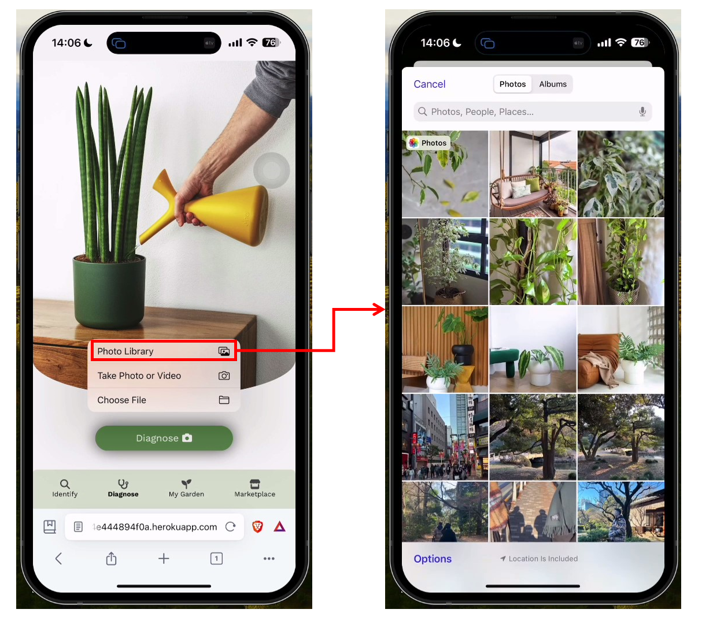
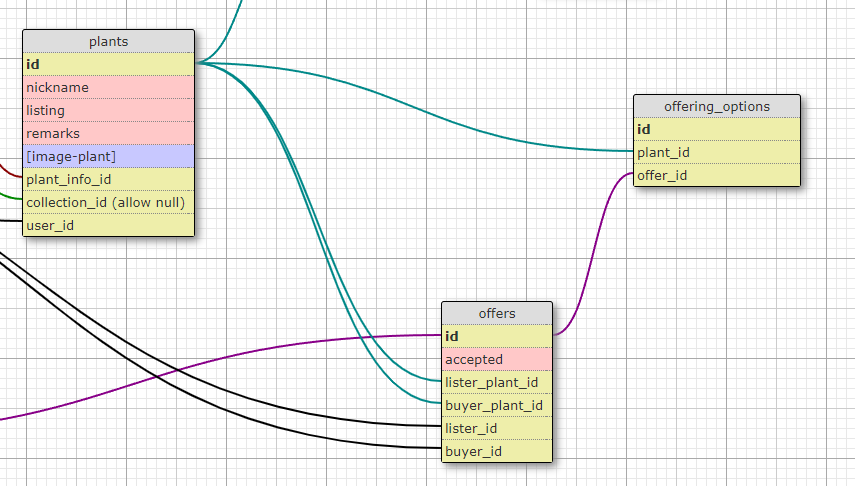

Sproutify is a plant management app for budding gardening enthusiasts. Features:
Plant identification
Illness diagnosis
Plant tracking (via My Garden)
Share watering schedule with buddy
Plant swap marketplace with chat
Demo Video
My Role
High fidelity Figma wireframe and prototype design
Illness Diagnosis feature (Pair-programming)
Marketplace features (Pair-programming)
Problem Solving Highlights
Integration of 3rd Party API for Plant and Illness Identification
Problem:
To develop the app in 2 weeks, a 3rd party API, plant.id, was used to diagnose plant illnesses.
This API (Documentation) required the submission of a Base64 image in the API request body.
This was not intuitive for end users, who would typically submit a photo and expect a result.
Solution: Create a form on frontend to collect image file, convert image file to Base64 in the backend and send to plant.id API.
On the frontend, the input field was styled to look like an "upload" button. When clicked, users could access their device camera or photo gallery to attach an image.

Upon receipt of the image file via event listener, convert to Base64 string using the Javascript FileReader interface, readAsDataURL method. Append Base64 string when calling the 3rd party API.
System Design for Marketplace Offers
Problem: We had to design the marketplace for real-world complexities:
Users may want to review various offering options before agreeing to swap.
Swap offers can have 3 outcomes: pending, accepted, or rejected.
Swap offers to capture historical data accurately, though the plant may change hands.
Solution: We modelled the marketplace offer design after e-commerce applications:

The offers table was a snapshot table. Each record captured the buyer, lister, and the lister plant involved at that point in time.
Each offer data had a status indicator ("accepted" field). The buyer plant id was null until an offering option had been selected.
An offer could have many offering_options (1:N relationship). We stored the offering_options in a separate table. We avoided storing an array of options inside the offers table as it would be hard to manipulate such a data type if we had to CRUD the offering_options.
Project Achievement
Sproutify was presented at the Le Wagon Bootcamp Demo Day on 18 March 2024.